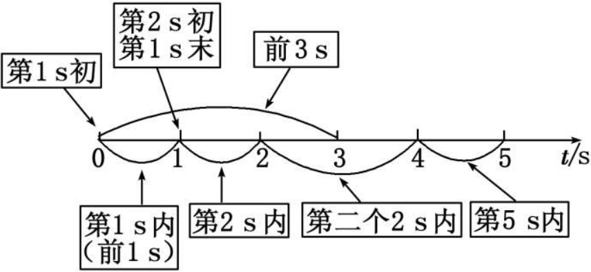
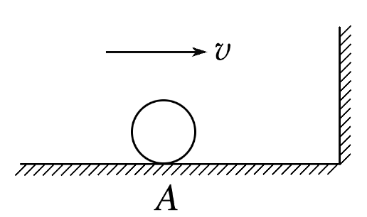

运动的描述 匀变速直线运动
学考复习
质点、参考系和位移
- 质点
- 质点是用来代替物体的具有质量的点，质点是一种理想化模型
- 把物体看作质点的条件: 物体的形状和大小对所研究问题的影响可以忽略不计
- 参考系：在描述物体运动时，用来作为参考的物体，通常以为地面参考系
- 时刻和时间间隔
- 时刻：指某一瞬间，在时间轴上用一个点来表示
- 时间间隔：两个时刻的间隔，在时间坐标轴上用一条线段来表示

- 路程和位移
- 路程是物体运动轨迹的长度，它是标量
- 位移是由初位置指向末位置的有向线段，它是矢量
- 在单向直线运动中，位移的大小等于路程；其他情况下，位移的大小小于路程
判断
1.质点是一种理想化模型，实际并不存在( 对 )
2.体积很大的物体，一定不能视为质点( 错 )
3.参考系必须选择静止不动的物体( 错 )
4.做直线运动的物体，其位移大小一定等于路程( 错 )
平均速度 瞬时速度
- 平均速度：物体发生的位移与发生这段位移所用时间之比，即 \bar{v}=\frac{\Delta x}{\Delta t}，是矢量，其方向就是对应位移的方向
- 瞬时速度：运动物体在某一时刻或经过某一位置的速度，是矢量，其方向是物体在这一时刻的运动方向或运动轨迹的切线方向
- 速率：瞬时速度的大小，是标量.
- 平均速率：物体运动的路程与通过这段路程所用时间的比值，平均速率大于等于平均速度的大小
判断
- 瞬时速度的方向就是物体在该时刻或该位置的运动方向( 对 )
- 一个物体在一段时间内的平均速度为 0，平均速率也一定为 0 ( 错 )
平均速度和瞬时速度的区别和联系
- 区别：平均速度表示物体在某段时间或某段位移内运动的平均快慢程度；瞬时速度表示物体在某一时刻或某一位置运动的快慢程度。
- 联系：瞬时速度是运动时间 \Delta t\rightarrow 0 时的平均速度，公式 \bar{v}=\frac{\Delta x}{\Delta t} 中，当 \Delta t\rightarrow0 时 v 是瞬时速度
加速度
- 物理意义：描述物体速度变化快慢的物理量
- 定义：物体速度的变化量和发生这一变化所用时间之比
- 定义式：a=\frac{\Delta v}{\Delta t} ，单位：\mathrm{m /s^{2}}
- 方向：与 \Delta v 的方向一致，由合力的方向决定，而与 v 的方向无关(填“有关”或“无关”)，是矢量
判断
- 物体的速度很大，加速度一定不为零( 错 )
- 物体的速度为零，加速度可能很大( 对 )
- 甲的加速度 a_{甲}＝2 m /s^{2}，乙的加速度 a_{乙}＝-3 m /s^{2}，a_{甲}>a_{乙} ( 错 )
- 物体的加速度增大，速度一定增大( 错 )
例题
如图所示，一小球在光滑水平面上从 A 点开始向右运动，经过 3 s 与距离 A 点 6 m 的竖直墙壁碰撞，碰撞时间很短，可忽略不计，碰后小球按原路以原速率返回. 取小球在 A 点时为计时起点，并且取水平向右的方向为正方向，在 0\sim7 s 内，小球的位移为 -2\;m，路程为 14\;m，速度的变化量为 -4\;m /s。

练习
物从离墙壁 x_1 = 5.0m 的位置由静止开始沿着水平向右朝墙壁做加速直线运动，经过 t_1 = 1. 0 s，以 v_1 =10 m/s 的速度与墙壁发生碰撞，碰撞时间 t= 0.2 s，然后以 v_2 = 8 m/s 反弹，反弹后水平向左做减速直线运动，经过 t_2 = 0.8 s，在离墙壁距离 x_2 = 3.2 m 的位置停下。则： 1. 物体与墙壁碰撞过程的加速度大小和方向； 2. 整个过程物体的平均速度。